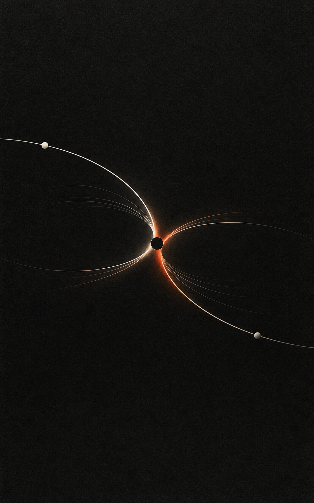

수정 내용은 이 브라우저에만 자동 저장됩니다. GitHub 원고에는 자동 반영되지 않습니다.
v0.10
서문·3부 10장·작업 안내를 담은 외부 검토본입니다.
읽는 분께
읽다가 뜻이 막히는 문장, 동의하기 어려운 주장, 실제 경험과 다른 부분을 표시해 주세요. 교정한 내용은 Markdown으로 내려받아 전달할 수 있습니다.

ORBIT PHILOSOPHY
$subtitle$
WEB · EXTERNAL REVIEW v0.10
수정 내용은 이 브라우저에만 자동 저장됩니다. GitHub 원고에는 자동 반영되지 않습니다.
서문·3부 10장·작업 안내를 담은 외부 검토본입니다.
읽다가 뜻이 막히는 문장, 동의하기 어려운 주장, 실제 경험과 다른 부분을 표시해 주세요. 교정한 내용은 Markdown으로 내려받아 전달할 수 있습니다.